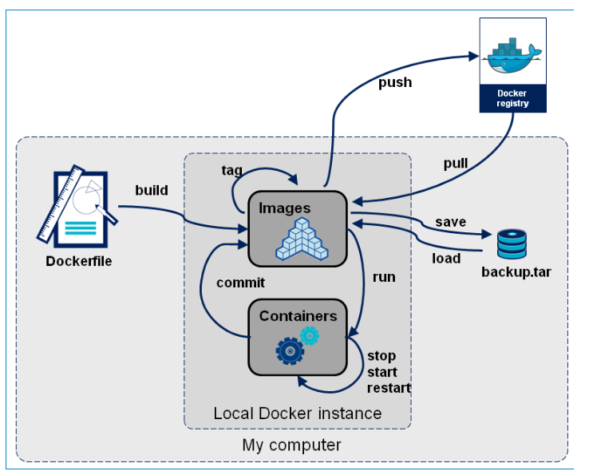
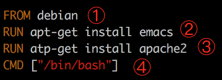

Docker 的安装与操作
1. 在 Ubuntu 中安装 Docker
docker 的本地安装:
第一步:
将以下两个文件拖入 ubuntu 系统中:
- docker-ce_17.03.2~ce-0~ubuntu-xenial_amd64.deb
- gpg
放到一个文件夹内( 例如: docker_file )
第二步:
进入这两个文件所在文件夹:
cd docker_file调用以下两个命令即可安装:
# 安装第一个文件 sudo apt-key add gpg # 安装第二个文件 sudo dpkg -i docker-ce_17.03.2~ce-0~ubuntu-xenial_amd64.deb
第三步:
检查 Docker 是否安装成功:
sudo docker run hello-world
出现如下信息，表示安装成功

安装成功之后, 我们在命令行中即可使用 docker 命令, 但是这个命令只能在 sudo 权限下才可使用.
为了避免每次命令都输入 sudo，可以设置用户权限，注意执行后须注销重新登录
sudo usermod -a -G docker $USER
2. 手动启动与停止 (特殊情况使用)
安装完成Docker后，默认已经启动了docker服务
如需手动控制 docker 服务的启停，可执行如下命令
# 启动docker sudo service docker start # 停止docker sudo service docker stop # 重启docker sudo service docker restart
3. Docker 镜像操作
什么是 Docker 镜像
Docker 镜像是由文件系统叠加而成的一种存储方式
最底端是一个文件引导系统，即 bootfs，这很像典型的 Linux / Unix 的引导文件系统。
Docker 用户几乎永远不会和引导系统有什么交互。
实际上，当一个容器启动后，它将会被移动到内存中，而引导文件系统则会被卸载，以留出更多的内存供磁盘镜像使用。
Docker 容器启动是需要一些文件的， 而这些文件就可以称为 Docker 镜像。

Docker 把应用程序及其依赖，打包在 image(镜像) 文件里面。
只有通过这个文件，才能生成 Docker 容器。
image 文件可以看作是容器的模板。Docker 根据 image 文件生成容器的实例。同一个 image 文件，可以生成多个同时运行的容器实例。
image 是二进制文件。实际开发中，一个 image 文件往往通过继承另一个 image 文件，加上一些个性化设置而生成。举例来说，你可以在 Ubuntu 的 image 基础上，往里面加入 Apache 服务器，形成你的 image。
image 文件是通用的，一台机器的 image 文件拷贝到另一台机器，照样可以使用。一般来说，为了节省时间，我们应该尽量使用别人制作好的 image 文件，而不是自己制作。即使要定制，也应该基于别人的 image 文件进行加工，而不是从零开始制作。
为了方便共享，image 文件制作完成后，可以上传到网上的仓库。Docker 的官方仓库 Docker Hub 是最重要、最常用的 image 仓库。此外，出售自己制作的 image 文件也是可以的。
列出镜像
这里的 image 就是镜像的意思
后面要讲的容器是 container
docker image ls

- REPOSITORY：镜像所在的仓库名称
- TAG：镜像版本
- IMAGEID：镜像标识: id
- CREATED：镜像的创建日期(不是获取该镜像的日期)
- SIZE：镜像大小
额外扩展:
为了区分同一个仓库下的不同镜像，Docker 提供了一种称为标签( Tag )的功能。
每个镜像在列出来时都带有一个标签，例如 latest、 12.10、12.04 等等。
每个标签对组成特定镜像的一 些镜像层进行标记(比如，标签 12.04 就是对所有 Ubuntu12.04 镜像层的标记)。
这种机制 使得同一个仓库中可以存储多个镜像。--- 版本号
我们在运行同一个仓库中的不同镜像时，可以通过在仓库名后面加上一个冒号和标签名 来指定该仓库中的某一具体的镜像
例如 docker run --name custom_container_name –i –t docker.io/ubunto:12.04 /bin/bash，表明从镜像 Ubuntu:12.04 启动一个容器，而这个镜像的操 作系统就是 Ubuntu:12.04。在构建容器时指定仓库的标签也是一个好习惯。
拉取镜像
我们如果想要使用镜像,一般会从镜像仓库中获取.
Docker 维护了镜像仓库, 分为公有和私有两种
- 公有的官方仓库 Docker Hub(https://hub.docker.com/) 是最重要最常用的镜像仓库。
- 私有仓库（Private Registry）是开发者或者企业自建的镜像存储库，通常用来保存企业 内部的 Docker 镜像，用于内部开发流程和产品的发布、版本控制。
要想获取某个镜像，我们可以使用pull命令，从仓库中拉取镜像到本地，
例如:
docker image pull library/hello-world
上面代码中
docker image pull: 是抓取 image 文件的命令
library/hello-world: 是 image 文件在仓库里面的位置
- 其中
library是 image 文件所在的组hello-world是 image 文件的名字。

补充:
由于 Docker 官方提供的 image 文件，都放在
library组里面，所以它的是默认组，可以省略。因此，上面的命令可以写成下面这样。# 从官方组中拉取, 可以省略 library # 例如: docker image pull hello-world
删除镜像
docker image rm 镜像名或镜像id
例如:
docker image rm hello-world
练习:
拉取一个 ubuntu 的镜像:
docker image pull ubuntu
4. Docker 容器操作
创建容器
docker run [option] 镜像名 [向启动容器中传入的命令]
常用可选参数说明：
- -i 表示以“交互模式”运行容器
- -t 表示容器启动后会进入其命令行。加入这两个参数后，容器创建就能登录进去。即 分配一个伪终端。
- --name 为创建的容器命名
- -v 表示目录映射关系(前者是宿主机目录，后者是映射到宿主机上的目录，即 宿主机目录:容器中目录)，可以使 用多个-v 做多个目录或文件映射。注意:最好做目录映射，在宿主机上做修改，然后 共享到容器上。
- -d 在run后面加上-d参数,则会创建一个守护式容器在后台运行(这样创建容器后不 会自动登录容器，如果只加-i -t 两个参数，创建后就会自动进去容器)。
- -p 表示端口映射，前者是宿主机端口，后者是容器内的映射端口。可以使用多个-p 做多个端口映射
- -e 为容器设置环境变量
- --network=host 表示将主机的网络环境映射到容器中，容器的网络与主机相同
交互式容器
例如，创建一个交互式容器，并命名为myubuntu
docker run -it --name=myubuntu ubuntu /bin/bash
在容器中可以随意执行linux命令，就是一个ubuntu的环境，当执行exit命令退出时，该容器也随之停止。
守护式容器
创建一个守护式容器:如果对于一个需要长期运行的容器来说，我们可以创建一个守护式容器。在容器内部exit退出时，容器也不会停止。
docker run -dit --name=myubuntu2 ubuntu
进入已运行的容器
docker exec -it 容器名或容器id 进入后执行的第一个命令
如
docker exec -it myubuntu2 /bin/bash
查看容器
# 列出本机正在运行的容器
docker container ls
# 列出本机所有容器，包括已经终止运行的
docker container ls --all
停止与启动容器
# 停止一个已经在运行的容器
docker container stop 容器名或容器id
# 启动一个已经停止的容器
docker container start 容器名或容器id
# kill掉一个已经在运行的容器
docker container kill 容器名或容器id
删除容器
docker container rm 容器名或容器id
5. 将容器保存为镜像
我们可以通过如下命令将容器保存为镜像
docker commit 容器名 镜像名
例如:

6. 镜像备份与迁移
我们可以通过save命令将镜像打包成文件，拷贝给别人使用
docker save -o 保存的文件名 镜像名
如
docker save -o ./ubuntu.tar ubuntu
在拿到镜像文件后，可以通过load方法，将镜像加载到本地
docker load -i ./ubuntu.tar
总结:

课后练习:
1) 镜像
| 命令 | 说明 |
|---|---|
| docker image pull 组名/镜像名称 | 从仓库拉取镜像 |
| docker image ls | 查看本地所有镜像 |
| docker image rm 镜像名称/镜像ID | 删除指定镜像 |
2) 容器
| 命令 | 说明 |
|---|---|
| docker run [-option] 镜像 [向启动容器中传入的命令] | 使用镜像创建容器 |
| docker exec -it 容器名或容器id 进入后执行的第一个命令 | 进入指定容器 |
| docker container ls | 查询所有启动的容器 |
| docker container ls --all | 查询所有容器 |
| docker container start 容器名称 | 启动指定容器 |
| docker container stop 容器名称 | 停止指定容器 |
| docker container kill 容器名称 | 删除指定容器 |
3) 其他
| 命令 | 说明 |
|---|---|
| docker commit 容器名 镜像名 | 将容器保存为镜像 |
| docker save -o 保存的文件名 镜像名 | 将镜像打包为文件 |
| docker load -i ./ubuntu.tar | 将镜像加载到本地 |
额外补充:
了解即可:
Docker 支持通过扩展现有镜像，创建新的镜像。
实际上，Docker Hub 中 99% 的镜像都是通过在 base 镜像中安装和配置需要的软件构建出来的。比如我们现在构建一个新的镜像，Dockerfile 如下：

① 新镜像不再是从 scratch 开始，而是直接在 Debian base 镜像上构建。 ② 安装 emacs 编辑器。 ③ 安装 apache2。 ④ 容器启动时运行 bash。
构建过程如下图所示：

可以看到，新镜像是从 base 镜像一层一层叠加生成的。每安装一个软件，就在现有镜像的基础上增加一层。
问什么 Docker 镜像要采用这种分层结构呢？
最大的一个好处就是 - 共享资源。
比如：有多个镜像都从相同的 base 镜像构建而来，那么 Docker Host 只需在磁盘上保存一份 base 镜像；同时内存中也只需加载一份 base 镜像，就可以为所有容器服务了。而且镜像的每一层都可以被共享，我们将在后面更深入地讨论这个特性。
这时可能就有人会问了：如果多个容器共享一份基础镜像，当某个容器修改了基础镜像的内容，比如 /etc 下的文件，这时其他容器的 /etc 是否也会被修改？
答案是不会！ 修改会被限制在单个容器内。 这就是我们接下来要学习的容器 Copy-on-Write 特性。
可写的容器层
当容器启动时，一个新的可写层被加载到镜像的顶部。 这一层通常被称作“容器层”，“容器层”之下的都叫“镜像层”。

所有对容器的改动 - 无论添加、删除、还是修改文件都只会发生在容器层中。
只有容器层是可写的，容器层下面的所有镜像层都是只读的。
下面我们深入讨论容器层的细节。
镜像层数量可能会很多，所有镜像层会联合在一起组成一个统一的文件系统。如果不同层中有一个相同路径的文件，比如 /a，上层的 /a 会覆盖下层的 /a，也就是说用户只能访问到上层中的文件 /a。在容器层中，用户看到的是一个叠加之后的文件系统。
- 添加文件 在容器中创建文件时，新文件被添加到容器层中。
- 读取文件 在容器中读取某个文件时，Docker 会从上往下依次在各镜像层中查找此文件。一旦找到，立即将其复制到容器层，然后打开并读入内存。
- 修改文件 在容器中修改已存在的文件时，Docker 会从上往下依次在各镜像层中查找此文件。一旦找到，立即将其复制到容器层，然后修改之。
- 删除文件 在容器中删除文件时，Docker 也是从上往下依次在镜像层中查找此文件。找到后，会在容器层中记录下此删除操作。
只有当需要修改时才复制一份数据，这种特性被称作 Copy-on-Write。可见，容器层保存的是镜像变化的部分，不会对镜像本身进行任何修改。
这样就解释了我们前面提出的问题：容器层记录对镜像的修改，所有镜像层都是只读的，不会被容器修改，所以镜像可以被多个容器共享。